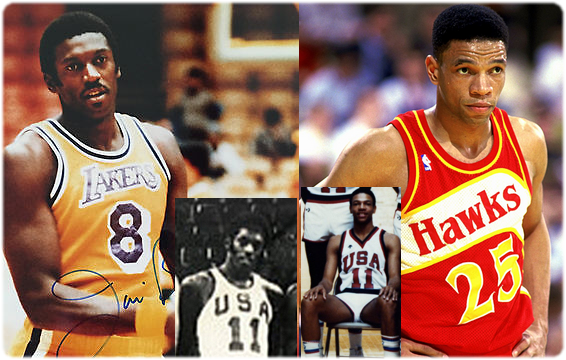
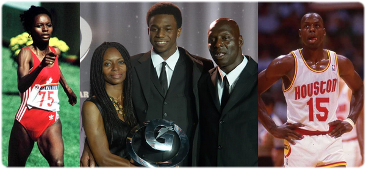
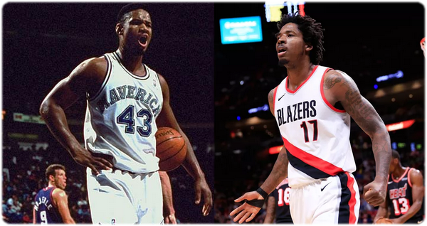

26 представителей семей НБА в сезоне 2018-19
Официально за историю НБА набралось уже под 90 пар «отец-сын» и зафиксировано 8 случаев появления внуков бывших игроков. В сезоне 2018-19 принимают участие четверть сотни баскетболистов, чьи предки в свое время также играли в НБА. Пробежимся по ним.
Дэвин Букер – сын Мэлвина Букера
Первым из этой пары, конечно же, помню отца Мэлвина, и еще даже не в химкинском периоде, а в роли резервиста «Голден Стэйт» в середине 90-х. Почему-то он тогда запомнился, хотя ничего особенно за недолгие игровые минуты показать не успевал, будучи невыбранным на драфте НБА и осуществившим свою мечту через дорожку КБА. Позднее Сергей Николаевич Елевич говорил мне о Мэлвине с восторгом, описывая его, как разыгрывающего с компьютером в голове. В итоге после 4 лет в NCAA в НБА Букер-старший смог задержаться лишь на два сезона (96-97), где за «Хьюстон», «Денвер» и «Голден Стэйт» поучаствовал в 32 матчах, набрав суммарные 166 очков.
Спустя 20 лет его сын Дэвин попал в НБА под 13-м номером драфта, затем был выбран в пятерку лучших новичков, победил в конкурсе трехочковых прошлого года и стал самым молодым в истории лиги, набравшим 70 очков в 20 лет. А на днях повторил достижение Коби Брайанта 12-летней давности, в пяти матчах подряд набирая не менее 20 очков за одну только первую половину матча.
Если папа в НБА смог покорить лишь планку в 160 очков за карьеру, то сынок за следующие 5 лет заработает в ней под 160 миллионов долларов. Примечательно, что ни тот не другой (пока) не имеют опыта выступлений в плэй-офф НБА.
Джэлен Брансон – сын Рика Брансона
Если старший Букер пролетел мимо драфта в 1994 году, то старший Брансон – год спустя. В НБА Рик также пробрался через смотры Континентальной лиги, но задержался там на долгие 9 сезонов, появляясь в составах 7 клубов. Причем, в «Портленд», «Чикаго» и «Нью-Йорк» приходил по два раза. Всего в его НБА-активе 1090 очков, рекорд результативности – 19 очков.
Его сын Джэлен заинтересовал «Даллас» летом 2018-го и был выбран «Маверикс» под общим 33 номером драфта. За 64 матча (из них 30 в старте), помогая Луке Дончичу, сынок набрал уже больше половины карьерных очков отца. В середине марта против «Сан-Антонио» Джэлен офомил максимальные пока 34 очка, выдавая за месяц среднюю результативность – более 15 очков за матч.
Джэй Краудер – сын Кори Краудера
Мало кто знает, что отец яркого бойца Краудера, ныне играющего за «Юту», свою профессиональную карьеру начинал в «Джазз». Кори Краудер попал в НБА мимо драфта и провел там немного времени. В сезоне 1991-92 он появлялся в составе «Юты» на протяжении 51 регулярного матча и четырежды выходил в плэй-офф. Позднее в ноябре-декабре 1994-го ненадолго выходил на паркет в форме «Спёрз». А практически все остальные годы своей 15-летней карьеры Кори играл в Европе.
Полное имя его известного сына – Кори Джэй Краудер, в НБА он проводит уже 7-й сезон, представляя 4-ю команду - как раз, «Джазз». В предыдущие 5 лет Джэй неизменно играл в плэй-офф. Лучшим на данный момент для него является сезон 2016-17 в «Бостоне». Тогда он в среднем набирал почти по 14 очков, включая 18 матчей плэй-офф. А вот после обмена в «Кливленд» с Айзейей Томасом на Кайри своим стать ЛеБрону не смог и походу сезона стал участником второго обмена.
Стэф и Сэт Карри – сыновья Дэлла Карри
Дэлл Карри наряду с Дэннисом Скоттом были моими любимыми дальнобойщиками в 90-е. И команды у них тогда были классные – Скотт с Шаком и Пенни, Дэлл с Ларри и Зо. Именно в «Хорнетс» провел свои лучшие 10 лет в НБА Карри-старший, став в 1994-м лучшим «шестым» игроком. Но перед тем он по году успел провести в «Юте» и «Кливленде». Отчего и местом рождения Стэфена Карри значится огайский Акрон, где за 4 года до того родился ЛеБрон. А вот в школу Стэф пошел уже в Шарлотт, там же родился потом и его брат Сэт.
Старший сын Карри за свои 10 лет в НБА уже успел собрать кучу наград, поставить не один рекорд и помог трижды стать чемпионами «Уорриорз», которые выбрали его на драфте 2009 года под общим 7 номером. Младший сын получился самым низким из мужской половины семьи Карри (188 см против 191 у Стэфа и 193 у Дэлла). Да и на драфте в отличие от двух других на него никто внимания не обратил. Но через сито Лиги Развития и этому Карри НБА дала шанс, лучшим для него стал сезон 2016-17, когда за «Даллас» Сэт набирал по 13 очков. Но следующий сезон он был вынужден пропустить по здоровью, а в нынешнем по 18 минут проводит за «Портленд», надежно бросая из-за дуги, как и два других Карри.
А в День Святого Валентина этого года на перерыве всех звезд всё в той же Шарлотт Сэт обручился с дочкой Дока Риверса – Кэлли. Прошлой весной у них родилась дочь. В своё время Сэт играл за «Дьюк» с её братом Остином.
Но на этом связь Карри и НБА не заканчивается. Сестра Сэта и Стэфа по имени Сайдел замужем за Дэмионом Ли, который сезон 2018-19 проводит между «Голден Стэйт» и его фарм-клубом «Санта Круз Уорриорз», за который ранее выступал и Сэт. Сайдел Карри, как и мать семейства - волейболистка.
Остин Риверс – сын Дока Риверса
А сам Остин стал первым сыном, игравшим в НБА под руководством своего отца – всё того же Дока (Глена) Риверса. Остин родился летом 1992 года в Калифорнии, где завершил сезон за «Клипперс» его отец. Именно в этой команде спустя 23 года они и встретились уже как тренер и игрок. Будучи игроком, Док провел в НБА 13 сезонов и 8 из них за «Атланту» в компании с Домиником Уилкинсом. В 1988 году был вызван на матч звезд. А на третий год после завершения карьеры игрока стал тренером и сходу же был назван лучшим тренером года, выведя «Орландо» на 50 побед в регулярном чемпионате. Спустя 8 лет стал Риверс-старший и чемпионом, приведя к этому званию «Селтикс» с Пирсом, Алленом и Гарнеттом. Будучи выбранным очень высоко – под 10 номером, Остин за 6 лет играет уже в 4-й команде и на звезду не тянет. По ходу этого сезона, прилипнув к «Хьюстону», он набирает по 9 очков.
Кстати, дядя Дока Риверса – это Джим Брюер, который в 1982 году под занавес карьеры стал чемпионом НБА в «Лейкерс», а за 10 лет до того, проиграл сборной СССР в мюнхенском финале.

Сам же Риверс, тогда еще Глен, проиграл советской сборной на Чемпионате Мира в колумбийской Боготе опять же в 1982-м. Причем в обоих этих случаях финалистов развело одно очко (51-50 и 95-94), а дядя и племянник за американскую сборную выступали под 11 номером.
Эндрю Уиггинс – сын Митчелла Уиггинса

А одним из партнеров Глена Риверса по сборной США 1982 года был Митчелл Уиггинс. В НБА он пришел за год до Джордана в команду «Чикаго». Всего Митчелл провел в профессиональном баскетболе 20 лет, из которых на НБА пришлось лишь 6. При этом уже в своем третьем сезоне Уиггинс вместе с «Хьюстоном» вышел в финал НБА, где в компании с Оладжьювоном и Сэмпсоном уступил «Бостону». Да к тому же, тем летом он не прошел наркотест и был дисквалифицирован лигой на два года, отчего и обратил внимание на команды Европы. Лучший в персональном плане получился у Митчелла сезон 1989-90, когда он в среднем набирал по 15,5 очка.
У него три дочери и трое сыновей, младший из которых по имени Эндрю стал первым номером драфта НБА 2014 года и сразу же был обменян из «Кливленда» в «Миннесоту» на Кевина Лава. Родился Эндрю в Канаде, хотя у его американского отца в то время был греческий период карьеры. Место рождения мальчика, видимо, было выбрано потому, что его мать Марита Пэйн-Уиггинс (бывшая легкоатлетка-олимпийка) имеет канадское гражданство, хоть и родилась в Барбадосе. Неудивительно, что с такими атлетичными родителями мальчик и сам рос в любви к спорту, в 13 лет он впервые забил сверху. За «Тимбервулвс» к своим 23 годам Эндрю проводит уже пятый сезон и кроме удачного дебютного года, когда он был назван лучшим новичком, ничем серьезным пока не отметился. Говоря о баскетбольном таланте Уиггинса-младшего, часто упоминают и его нередкие проблемы с трудовой этикой. Если брать текущий сезон, то у него были матчи, в которых он набирал и 40 очков, и 0.
Кевин Лав – сын Стэна Лава
И тот самый Кевин Лав – сам сын бывшего игрока НБА. Стэн Лав был выбран «Балтимором» на драфте НБА 1971 года под 9 номером, но провел в НБА лишь 4 сезона за «Буллитс», «Лейкерс» и «Спёрс». Кевин родился, когда Стэну было 39 лет, и второе имя он ему дал Уэсли в честь своего друга и товарища по «Буллитс» - Уэса Анселда. Кстати, дядя Кевина и родной брат Стэна – это вокалист «Beach Boys» Майк Лав. А основатель группы и вокалисты Уилсоны – это их двоюродные братья. В баскетбольном плане Лав-младший, разумеется, уже обошел старшего. Он уже чемпион НБА, пятикратный участник матчей звезд, самый прогрессирующий игрок сезона, лидер сезона по подборам, победитель конкурса трехочковых, обладатель золота Олимпиады и Чемпионата Мира.
Лэрри Нэнс – сын Лэрри Нэнса
И у нынешнего товарища Кевина по «Кавс» папа тоже играл в НБА, но в этом случае – отец на паркете был круче сына. Эта пара имеет одинаковые имена, фамилии, номера, «Кливленд» и участие в конкурсе данков. Но сын пока лишь идет по стопам отца, но не может его обойти. Старший Нэнс выиграл первый в истории НБА конкурс данков, а младший на прошлогоднем конкурсе стал вторым. Папа трижды был участником матчей всех звезд, а его старшему сыну этого не видать. Старший за свою 13-летнюю карьеру в среднем набирал по 17 очков за матч, а младший ни в одном из своих 4 сезонов не имел двузначной средней результативности. Родился Лэрри-младший всё в том же «леброновском» Акроне, когда его папа выступал за «Кавальерс».
Джэрен Джексон – сын Джэрена Джексона
Продолжаем пробег по отцам с «оригинальным» подходом к выбору имен сыновьям. 1999 год Джэрену Джексону удался на славу. В июне он стал чемпионом НБА, когда помог «Сан-Антонио» добиться первой победы, а в сентябре у него роился сын-тезка. В отличие от отца – коренастого защитника ростом 193 см, не прошедшего драфт, Джэрен-младший вымахал до 211 см, чтобы играть на 4/5 позиции, и был выбран «Мемфисом» под общим 4-м номером прошлым летом. Из своих первых 58 матчей 56 Джэрен-младший начинал в старте. Средняя статистика в этих играх у него составила 13,8 очка, 4,7 подбора и 1,4 блокшота.
Гэри Трент – сын Гэри Трента
Как и ЛаВар Болл, как и Харви Грант, о котором поговорим ниже, Гэри Трент дал своим сыновьям схожие имена (Гэрисон, Грэйсон, Грэйдон), а одному из них посчастливилось носить точную копию отцовского имени – Гэри. Трент-старший отправился в НБА с 11-й строчки драфта 1995 года и провел там 9 сезонов. Его путь начался с обмена, ведь взяли-то его «Милуоки» и тут же замешали в «Портленд». Но уже во время третьего сезона «Трэйл Блэйзерс» не стали его сохранять при желании получить в свои ряды Дэймона Стаудмайера, который также пришел в НБА с драфта 1995 года под 7-м номером. Лучшим для Гэри-старшего стал короткий локаутный сезон 1998-99, оказавшись в «Далласе» в возрасте 24 лет он набирал по 16 очков и 8 подборов. Но дальше его карьера резко пошла на спад, когда за два следующие сезона в «Маверикс» он смог провести лишь 44 игры, доигрывая затем свой баскетбольный век в «Миннесоте». В студенческие годы у него было прозвище «The Shaq of the MAC» (по названию конференции NCAA).
Гэри-младший помельче своего отца (198 см и 92 кг против 203 и 113), но дорога в НБА для него сложилась также через обмен в «Портленд» во время драфта. К концу марта у него значилось лишь 11 игр в составе «Блэйзерс» со средним игровым временем меньше 5 минут, всё остальное время он был в рядах фарм-клуба G-лиги. Оба Гэри Трента родились в Коламбусе, штат Огайо.
Тим Хардуэй – сын Тима Хардуэя

Как только в нынешнем сезоне Тим Хардуэй-младший попал под раздачу во время обмена Кристапса Порзингиса в «Даллас», СМИ заговорили о том, что отец и сын оказались одноклубниками долговечного Дирка Новицки. Но Тим-старший запомнился баскетбольным болельщикам не только этим, став одним из элитных малышей 90-х. С ним с первым стал ассоциироваться термин «кроссовер». Два сезона (1989-90 и 1990-91) он был одной из трех голов результативного Горыныча «Run TMC» под руководством Дона Нельсона. Выйдя в плэй-офф 1991 года с 7-го места, они смогли выбить вторых «Сперс» и только Мэйджик с «Лейкерс» остановил их на пути к первому финальному сражению «Чикаго». После семи лет в «Голден Стэйт» Тим провел еще 5 крутых сезонов в революционном «Майами» Пэта Райли, регулярно рубясь с «Нью-Йорком» и пытаясь навязать претензии «Чикаго». За взлет с его помощью «Хит» увековечили его 10-ку. Неоднократно он выбирался в пятерки лучших игроков НБА, пять раз участвовал в матчах звезд и был выбран в «Дрим Тим 2» на Чемпиона Мира 94 года, но из-за травмы вынужден был его пропустить. Выбранный в сборную 1998 года, он вновь не смог сыграть за свою страну из-за локаута в НБА. И только в Сиднее в 34 года Хардуэй дождался своего шанса. Его средняя статистика в НБА, несмотря на последние увядающие годы, составила почти 18 очков, 8 передач и 1,6 перехвата за матч. Пять сезонов он набирал не менее 20 очков и три – не менее 10 передач.
А через 10 лет после ухода Тима Хардуэя на покой, появился в НБА другой игрок с таким же именем, но на 18 см выше. Выбрали младшего также на 10 пиков «позднее» старшего. А тезки они полнейшие – Тимоти Дуэйн Хардуэй. «Никс» его выбрали, через 2 года обменяли за ненадобностью, а еще через 2 года вновь подписали на много более дорогой контракт, чтобы еще через 2 года обменять. Это ж «Никс»… Причем, этот сезон был для Тима-младшего – лучшим в карьере, он набирал в среднем по 19 очков. Теперь он в «Далласе», где завершает 20-летнюю карьеру Дирк, и куда захаживал на сезон его папа в начале века. Оба Тима с разницей в 14 лет выбирались в пятерку лучших новичков.
Гэри Пэйтон – сын Гэри Пэйтона
Гэри Пэйтон запомнился в истории НБА не только как один из самых ярких «трэштокеров». Он стал символом канувшего в Лету «Сиэтла», за который верой и правдой отбегал с 22 до 34 лет, выведя его вместе с Шоном Кемпом в финал 1996 года. В тот год он был признан лучшим защищающимся игроком сезона. За неполные 13 сезонов в «СуперСоникс» 8 раз он заканчивал сезон со средней результативностью более 20 очков, 7 раз у него было не менее 8 результативных передач. И недаром его звали «Перчатка» - на протяжении 8 сезонов он совершал за матч в среднем более 2-х перехватов. После обмена в «Милуоки» на Рэя Аллена у него еще были сезоны в «Лейкерс», «Бостоне» и «Майами». В те годы он сначала вышел с Шаком во второй для себя финал в калифорнийской команде, а затем с Шаком же стал-таки чемпионом НБА уже во флоридской. Гэри – дважды олимпийский чемпион (1996 и 2000 г.г.). Неудивительно, что этого 9-кратного участника матчей всех звезд и многократного члена различных топовых пятерок в итоге ввели в Зал баскетбольной славы Нейсмита. Он был очень крепким игроком, дважды в его карьере были серии из более чем 350 игр, проведенных подряд. Даже в возрасте 38 лет в своем последнем сезоне он играл за «Хит» по 20 минут за матч. Мэрия Сиэтла объявила 6 июня 2000 года Днем Гэри Пэйтона.
Один из его сыновей Гэри Пэйтон II тоже добрался до НБА и также через «Орегон Стэйт», где он заканчивал свое обучение. Но если отец был выбран на драфте 1990 года под 2-м номером, то сын пролетел мимо драфта 2016 года. Через команды Лиги развития за три сезона он имеет опыт выступлений за «Милуоки», «Лейкерс» и «Вашингтон», но чаще оказывается в фармах. Младший на 3 см ниже старшего и ничем особенным не выделяется, что может прочить ему скорое будущее где-нибудь в Европе.
Гленн Робинсон – сын Гленна Робинсона
И нова Гэри, но в данном случае – это местечко в штате Индиана, где родились оба Гленна Робинсона. Первый пришел в НБА в 1994 году в качестве звезды, будучи выбранным «Милуоки» под первым номером драфта. За «Бакс» он и отыграл свои лучшие 8 сезонов, а потом делал остановки в «Атланте», «Филе» и «Сан-Антонио», где в итоге и стал чемпионом, оформив пенсионное удостоверение. Не став лучшим новичком 1995 года, он все-таки доигрался до двух участий в матчах звезд на закате своих выступлений в «Милуоки». А, кстати, приз главного дебютанта сезона был тогда поделен между двумя игроками – Джэйсоном Киддом и Грантом Хиллом, выбранными на драфте 1994 года под 2 и 3 номерами. В целом же карьера Гленна Робинсона была успешной, средняя результативность «Большой Собаки» составила 20,7 очка и ни разу по сезону они так и не спустилась ниже 10 очков. В 1996 году он был выбран в сборную США на олимпийские игры, но из-за травмы вынужден был их пропустить.
Его старший сын – Гленн III немного легче и ниже отца, но уже тоже успел заявить о себе в НБА. В лигу он пришел больше как сын своего отца и за 5 сезонов сменил уже 4 клуба, но выиграл конкурс данков 2017 года в майке родной «Индианы», вписав своё имя в историю. Тот год был лучшим для него в НБА – 69 матчей в сезоне и 27 в старте, за которые он проводил на паркете по 20 минут и набирал по 6 очков. В 25 лет он имеет двухлетний контракт с «Детройтом» и не представляет собой особой значимости для НБА.
Уэсли Мэттьюз – сына Уэса Мэттьюза
Несмотря на чуть разные написания имен на самом деле отец и сын Мэттьюзы – полнейшие тезки, имея в паспорте «Уэсли Джоэл». Папаша Мэттьюз, которого называли «Уайлд Уайлд Уэс», попал в НБА на драфте 1980 года под 14 номером. Дорогу в жизнь ему тогда дал «Вашингтон Буллитс», и новичок особо не огорчал, набирая более 12 очков и 4 передач. Но в середине первого же сезона он был обменян в «Атланту» на Дона Коллинза, выбранного на том же самом драфте ниже (18-м). Потом для Уэса началась полоса смены клубов, включая команды КБА. Сезон 1984-85 он встретил в «Чикаго», где начинал свой славный путь Майкл Джордан. Но уже через год он оказался в «Сан-Антонио», где в течение 75 регулярных матчей набирал по 11 очков и 6 передач, а в плэй-офф взвинтил свою результативность до потолка, в трех играх делая по 25 очков и 8 передач! Последний факт заставил обратить на него внимание боссов «Лейкерс», укреплявших свою скамейку. Став глубоким ролевиком в Калифорнии, он дважды подряд оказывался чемпионом НБА. На этом его история в лучшей баскетбольной лиге мира закончилась, если не считать одну игру в следующем сезоне за «Хоукс». Но сам Мэтьюз-старший к 30 годам еще не наигрался и до 37 продолжал играть за всякий шлак, включая филиппинскую команду.
После того самого успешном в персональном плане сезона 1985-86 в Сан-Антонио у него родился новый Уэсли Джоэл Мэттьюз. Парень вымахал значительно больше своего отца – на 11 см и на 23 кг тяжелее, но на драфте 2009 года оказался никому не нужным. Правда за сезон, поверившей в него «Юте», он смог доказать свою профпригодность. И из «ноунэйма» превратился в игрока, который смог увеличить свою годовую зарплату в 10 раз. Второй шанс ему дал «Портленд». После пятилетнего соглашения с «Блэйзерс» Уэсли подписался с «Далласом», где его оклад увеличился еще на «десятку». Но в последний день января его, как и Хардуэя-младшего, замешали в обмене, после которого «Никс» от него отказались, и он по ходу сезона примкнул к «Индиане». Уэсли называют «Железным человеком», в отличие от отца он нашел свою нишу в НБА, набирая по карьере в среднем под 14 очков за матч, причем и во всех четырех походах в плэй-офф с тремя разными командами. Сейчас он досрочно помог выйти в постсезсон уже четвертой, набирая по 12 очков. Уэсли не стал звездой, но к 32 годам у него стабильная зарплата и «добротная трудовая книжка» – отлично для парня, который пролетел мимо драфта.
Джулиан Уошберн – сына Криса Уошберна
Если выбранный под 9-м номером отец Кевина Лава провел в НБА лишь 4 сезона, то папа нынешнего форварда «Мемфиса» Джулиана Уошберна после 3-го пика задержался в лиге еще меньше – только 2 года. Крис Уошберн был одним из тех, наркозависимых, кто сделал драфт 1986 года печальным в памяти НБА. Выбранный сразу после трагичного Лена Байэса, он не смог провести до конца и первый сезон. А провалив все тесты, получил от НБА пожизненный отказ в 1989 году. Будучи вместе с Байэсом одним из самых крутых проспектов, Крис смог принять участие только в 72 играх, а потом скатился до бомжевания. Позднее он завязал со своей пагубной зависимостью и вернулся к нормальной жизни. Напомню, что с того самого драфта начал свой более удачный профессиональный путь ранее упомянутый Дэлл Карри.
После нескольких лет в Лиге Развития один из его сыновей Джулиан получил контракт ст «Мемфис Гриззлис». В 27 лет у него значится 8 матчей НБА, из которых 2 в старте.
Домантас Сабонис – сын Арвидаса Сабониса
Был на драфте 1986 года и еще один удивительный игрок, который дебютировал за свою команду лишь спустя 10 лет. Это легендарный советский и литовский баскетболист Арвидас Сабонис. Что-то начинать говорить о нем подробно, так это значит – обязательно что-то упустить. Думаю, русскоязычным читателям и так известна эта баскетбольная глыба!
У Сабаса четверо детей и самый маленький из них уже точно пошел по стопам отца. Домантас, хоть и ниже папы на 10 см, но до позиции мощного форварда/центрового дорос. Он родился в «Портленде», ковал мастерство в «Уникахе», закреплял американский стиль игры в «Гонзаге» (NCAA), а в 2016 году ушел в НБА под символичным для фамилии Сабонис 11 номером. Профессиональный путь за океаном начался для него с обмена из «Орландо» в «Оклахому» при переброске Сержа Ибаки. Первый год в НБА был для Домантаса пристрелочным, за 20 минут он набирал по 6 очков и 3,6 подбора. Но следующим летом он вновь стал частью сделки, теперь уже при отправке Пола Джорджа в «Тандер». И вот в «Индиане» Сабонис-младший нашел себя. В прошлом сезоне в возрасте 21 года он набирал по 11,6 очка и 7,7 подбора (12,4 и 4,6 в плэй-офф), а в этом - еще больше – 14,1 + 9,3. И вместе с тем же Мэттьюзом вывел «Пэйсерс» в плэй-офф досрочно.
По словам Арвидаса его сын являлся поклонником Лэрри Берда и зеленых цветов (близких любому литовцу) «Бостон Селтикс». И хоть в 2017 году Берд ушел с управленческого поста «Пейсерс», но остался в команде в качестве консультанта. В итоге получилось, что Домантас оказался в клубе своего любимого игрока.
Джерэми и Джериэн Грант – сыновья Харви Гранта
Как говорилось выше про Трентов, у брата-близнеца известного Хораса Гранта – Харви есть четверо сыновей с похожими именами – Джерэи, Джерэми, Джериэн и Джэйлин. Чем же был известен широкой публике сам отец большого семейства? Да в общем он только вызывал удивление тем, что люди узнавали о брате-близнеце чикагского чемпиона Хораса Гранта. Харви был чуть ниже брата (206 против 208 см) и значительно легче (88 против 97 кг), играл больше на позиции 3-4 номера, а не в краске. И выступать за универ «Клемсона» он стал на год позже, чем Хорас, а потом и вовсе – дважды сменил студенческие команды. Однако на драфте НБА он оказался не сильно ниже брата (12 выбор 1988 года после 10 выбора 1987 года). За спиной Харви 11 бесславных сезонов, у Хораса – 17, за которые он 4 раза становился чемпионом, однажды играл в матче звезд и четырежды выбирался во вторую пятерку лучших защищающихся игроков. Но второе поколение Грантов в НБА пошло как раз от Харви.
Старший по имени Харви Джерэи пролетел мимо драфта 2011 года и стал середняком европейских клубов, в этом сезоне вновь выступая в литовском «Нептунасе». Его брат Хьюстон Джерэми ушел в «Филадельфию» со второго раунда драфта 2014 года. За «76-х» он отыграл 2,5 сезона, и вот уже столько же бегает за «Оклахому». Нынешний сезон является лучшим для него – 68 из 71 матча он провел в старте, набирая по 13,3 очка и 5,3 подбора. И если эти два сына обладают габаритами своего известного дяди, то их брат Холдин Джериэн Грант оказался мельче всех – 193 см и 93 кг. Но при этом, у него был самый высокий выбор на драфте. В 2015 году он ушел в «Вашингтон» под 19 номером. И тут же при обмене Тима Хардуэя-младшего из «Нью-Йорка» Джериан оказался в «Никс». В данный момент он проводит 4-й сезон в третьей команде, являясь малоприметным середняком.
Эд Дэвис – сын Тэрри Дэвиса

На очереди два Дэвиса – два левши. Старший пролетел мимо драфта 1989 года, когда в НБА с ярмарки молодых талантов отправился ряд незвездных баскетболистов его позиции. В ТОП-15 попали тогда 7 мощных форвардов/центровых и ни один из них затем не удостоился попадания в пятерку лучших игроков сезона или на матч звезд. Лишь школьник Шон Кемп, ушедший 17-м, и серб Владе Дивац (26-й) добились подобного в разные годы. И несмотря на пролет такого слабого драфта Терри Дэвис смог стать полноценным игроком НБА, проведя в ней 10 сезонов за 12 лет. Промежутки были вызваны травмами. Дважды его статистика в начале 90-х в составе «Далласа» практически составляла дабл-дабл. Кроме «Маверикс» в его послужном списке были сезоны в «Майами», «Вашингтоне» и «Денвере», где он и завершил карьеру весной 2001-го.
А спустя 7 лет его сын Эд был признан вторым лучшим выпускником. Но за 2 года в «Северной Каролине» его акции слегка снизились, и в НБА в 2010 году он отправился только с 13-й строчки, имея за пазухой титул чемпиона NCAA 2009. Среди профессионалов в него поверили «Торонто Рэпторс», хотя уже к концу ноября отправили его на прокачку в Лигу Развития. Нынешний сезон для Дэвиса-младшего уже 9-й, команда – 5-я, на носу тридцатник. Средние его показатели по карьере в НБА – 6,5 очка и 6,8 подбора. И хоть по юности он считался более перспективным баскетболистом, чем его отец, но у Терри до травмы были сезоны получше.
Винсент Эдвардс – сын Билла Эдвардса
Был такой игрок Билли Эдвардс, в его профессиональной карьере значится 12 сезонов, но все они были проведены в Европе. В НБА у него лишь 3 матча в форме «Филадельфии», за которые он набрал 6 очков. Но, именно из таких ребят и собирали американскую сборную образца 1998 года, когда в НБА шумел локаут. У самую команду США и обыграли тогда на чемпионате мира русские, оставив ее на 3-м месте, а сами поднялись на второе. Один из сыновей Эдвардса – Винсент в конце второго раунда прошлогоднего драфта привлек внимание «Юты», но сразу же был обменян в «Хьюстон» на деньги. За весь первый сезон он пока даже не побил рекорд отца по количеству сыгранных в НБА матчей. У него на начало апреля лишь 2 игры и 3 очка. Остальное время он вынужден посвящать Лиге Развития (G).
Эл Хорфорд – сын Тито Хорфорда

На очереди два доминиканца, из которых отец на 8 см выше своего немаленького сына. Отец самого Альфредо Уильяма Хорфорда (по кличке «Тито») родом с Багамских островов, сам же он рожден в Доминикане. Однако в школу он ходил уже в Хьюстоне, а затем два года играл за флоридскую студенческую команду «Майами». В 1988 году на 216-сантиметрового гиганта обратили взор боссы «Милуоки Бакс», выбрав его под общим 39 номером во втором круге драфта. Там Тито провел два сезона и еще три игры отыграл за «Вашингтон» в 1993 году (без очков). Всего в НБА у него осталось 63 игры и 93 очка. Остальная его карьера проходила во Франции, Италии и родной Доминикане.
Намного круче идет дело его старшего сына Альфреда Джоэла Хорфорда Рейносо или, проще говоря, Эла Хорфорда. Придя в НБА под 3-м номером на драфте 2007 года, он имел за плечами два подряд чемпионских титула NCAA в составе «Флориды». Там они составляли мощный дуэт передней линии вместе с Джоакимом Ноа, который сначала котировался выше, но в виду травм и снижения показателей выпустил на драфте Хорфорда вперед. В итоге Эл 9 лет верой и правдой отслужил в поверившей в него «Атланте» и вот уже третий год защищает цвета «Селтикс». Ноа уже не первый год является тенью себя, а Хорфорд продолжает штамповать стабильные сезоны. Все 12 лет в НБА его средняя результативность выше 10 очков, лишь в первом сезоне он чуть-чуть не дотянул до 1 блока за матч, минимальное количество подборов в среднем за игру по сезонам – 6,8. В сезоне 2012-13 его статистика составила 17,4 очка, 10,2 подбора, 3,2 передачи, 1,1 блокшота и 1,1 перехвата. Во второй части своей профессиональной карьеры Эл стал еще и бросать, и забивать трехочковые. Его имя значится: в пятерке лучших новичков, во второй пятерке защищающихся игроков, в третьей пятерке лучших игроков сезона. Пять раз он становился участником матчей звезд, однажды - лучшим игроком месяца. К 32 годам он увеличил свою первую зарплату в 9 раз.
Люк Корнет – сын Фрэнка Корнета
А теперь два Корнета из Лексингтона, которые закончили Вандербилт. Речь об отце и сыне Фрэнке и Люке Корнетах, чьи имена уже зафиксировала в своей истории НБА. На незвездном драфте 1989 года, о котором упоминали выше, во втором раунде командой «Милуоки» был взят тяжелый форвард Фрэнк Корнет. Двумя последующими годами и ограничилась его карьера в НБА, за которую он провел 89 игр и набрал 171 очко. Окончательно с игрой в баскетбол Фрэнк завязал в 1994 году, имея еще по паре лет выступлений в Континентальной Баскетбольной Ассоциации и Италии.
Через год после этого у него родился сын Люк. И в отличие от Хорфордов, тут младший оказался значительно выше старшего. Малыш вымахал до 216 см и привлек взор «Нью-Йорк Никс», которые летом 2017-го сначала включили его в состав на Летнюю лигу, а затем выделили шкафчик и в «Мэдисон Скуэр Гарден». И вот он уже проводит второй сезон в пикирующих за Зионом «Никс». В чемпионате 2018-19 у Люка уже 41 игра и 15 в старте. В среднем он набирает по 6,7 очка, 2,8 подбора за 16 минут.
Джабари Паркер – сын Сонни Паркера
Джабари Паркера называли второй звездой школы «Симеон» после Деррика Роуза. Да и в НБА с драфта он попал под 2-м номером, а не под первым, как Деррик. Но лучше бы их не сравнивали вовсе. Ведь Джабари свои кресты порвал уже в первой половине дебютного сезона НБА, а затем получил рецидив спустя три года, окончательно расставшись со звездными надеждами. Приход Роуза в родной «Чикаго» был с драфта под первым номером, что до тяжелых травм успело принести ему звание MVP, приглашения на матчи звезд, победы в регулярках и финал Востока. А Паркер оказался на родине не только в ранге хроника, но и в не лучшие времена клуба, откуда был выменян по ходу первого же сезона. Номер 2 не стал вторым номером 1. В среднем за 4 сезона он пропускает каждый четвертый матч, набирая по 15 очков и 6 подборов.
В семье Паркеров было семеро детей, сам Джабари был рожден, когда его отцу стукнуло 40 лет. А ведь до 27 лет Роберт «Сонни» Паркер и сам был игроком НБА, имея 6 сезонов в составе «Голден Стэйт». В течение трех сезонов подряд он набирал по 14 очков и 5 подборов. Один раз Сонни играл в плэй-офф, когда вместе с Риком Бэрри, Джамаалом Уилксом и Робертом Пэришем они дошли до полуфинала Запада, где в 7-матчевой серии уступили «Лейкерс», которые позднее сами «легли» под «Портленд» молодого и еще почти здорового Билла Уолтона. Но то был закат сильной команды «Воинов» 70-х, которые в 1975 году стали чемпионами НБА.
Гарретт Темпл – сын Коллиса Темпла
Оба Темпла родом из Луизианы. Но старший Коллис играл за студенческую команду «Луизиана Стэйт», а младший Гарретт – за «LSU». А затем у них обоих был опыт выступлений за «Сан-Антонио». Эта пара не совсем подходит в наш обзор, но «Сперс» в НБА пришли из АБА, так что учтем и их. Отец оказался в «Сперс» (тогда еще в АБА) после драфта 1974 года, откуда он был выбран под 94 номером в 6-м раунде! Всего ему удалось провести там 22 игры, за которые он набирал по паре очков за матч. Сезон Коллис завершал и вовсе в Европе, на чем его игроцкий поход и завершился.
Его сын Гарретт хоть пробыл в «Сперс» и не намного дольше (82 игры в 2010 году), но в профи завис надолго. За 10 лет он сменил 10 команд НБА, точнее, они его сменили. Плюс – изрядно поколесил по Лиге Развития, заехав однажды в Италию. Им латают дыры, а он продолжает играть в любимую игру.
Клэй Томпсон – сын Майкла Томпсона

Большой дуэт оригинальных «Голден Стэйт» 2010-х, как известно, – это дети НБА. О Стэфе Карри мы уже говорили, на очереди Клэй Томпсон. Его отец Майкал Томпсон запомнился советским/российским любителям «Лучших игр НБА», как сменщик Карима Абдул-Джаббара по имени «Мичел» Томпсон. Однако, имя этого уроженца Багам «Mychal» произносится как «MIKE-ull». И до переезда в Калифорнию у него было 7 добротных сезонов в «Портленде», где он стал заменой набравшего травмы и ушедшего Уолтона. В 1978 году Томпсон был 1-м номером драфта, для сравнения – Лэрри Берд был тогда 6-м. В годы за «Блэйзерс» Майкал набирал в среднем почти по 17 очков и 9 подборов за матч. Дважды подряд он помог команде Мэйджика и Джаббара победить, тем самым, завершив золотую эпоху «Шоу-тайм» 80-х.
В 1990 году Томпсон-старший в возрасте 35 лет был уже основным центровым «Лейкерс» и именно тогда у него родился средний сын Клэй, который стал звездой современных «Уорриорз» и одним из лучших снайперов в истории НБА. У Клэя самого уже 3 титула, 5 вызовов на матч звезд, 2 включения в третью пятерку лучших игроков сезона и победа в конкурсе трехочковых. За 8 сезонов в «Уорриорз» он в среднем набирает по 20 очков за игру, реализую 42% трехочковых бросков. Примерно те же цифры он показывает и в матчах плэй-офф, которых у Клэя набралось уже 102 и все в старте!
Есть в этой семье и еще один баскетболист – Майкл (Mychel) Томпсон. Но в его карьере НБА лишь 5 матчей за «Кливленд» в сезоне 2011-12.
Зато он вместе с Сэтом Карри составляли фарм-дуэт «Splash Brothers» в фарме «Голден Стэйт», прокачивая дугу Лиги Развития под аплодисменты более известных братьев и отцов.
Джастис Уинслоу – сын Рикки Уинслоу
На драфте 1987 года у команды «Чикаго Буллз» было 4 пика, за которые они взяли центрового Олдена Полинайса (8), мощного форварда Хораса Гранта (10), легкого форварда Рикки Уинслоу (26) и защитника Тони Уайта (33). В итоге Полинайса сразу обменяли на Скотти Пиппена (5) в «Сиэтл», Гранта оставили, Уайт успел провести две игры, и его отцепили 12 ноября 1987 года, а Уинслоу отчислили 9 ноября, так что в истории «Чикаго» он не остался. Но затем его на месяц приютили в Милуоки. Те 7 игр в конце 1987 года, за которые он набрал 7 очков и были всей карьерой Рикки в НБА. Всё остальное – это Европа вплоть до 2000 года. А начиналось всё у него в NCAA довольно неплохо, когда он делил студенческий паркет вместе с товарищами по «Хьюстону» Оладжьювоном и Дрекслером в системе, которую СМИ окрестили «Phi Slama Jama» из-за большого количества атак, завершавшихся слэм-данками.
В Хьюстоне же родился и Джастис – один из сыновей Рикки. Он стал чемпионом NCAA в 2015 году в составе «Дьюк» и сразу же отправился на драфт НБА, где ему подарили 10 выбор «Майами Хит». По итогам первого сезона он был включен во вторую пятерку лучших новичков. За неполные 4 сезона он уже провел более 2 сотен матчей, включая сотню в старте, набирая по карьере в среднем по 9 очков и 5 подборов. В начале сезона 2018-19 «Хит» подписали с ним новый многолетний контракт.
Марвин Бэгли III – внук Джо Колдуэлла
А вот исключительная пара списка. В 1964 году под 2 номером драфта в НБА отправился Джо Колдуэлл, а через 54 года также со 2-й строчки в большой баскетбольный мир отправился его внук – Марвин Бэгли III. В том же 64-м году Колдуэлл был в составе золотой олимпийской сборной США, а затем 11 сезонов провел в профессиональном баскетболе. В НБА он играл за «Детройт», а затем за «Сент-Луис Хоукс» и позднее «Атланта Хоукс». А перед сезоном 1970-71 перебрался в АБА, где еще провел 5 лет. По 2 раза «Джампин Джо» играл в матчах звезд НБА и АБА, включался в различные пятерки лучших и защищающихся игроков. И где бы ни играл, всегда имел среднюю двузначную результативность, набирая по карьере по 16 очков, 5,3 подбора, 3,4 передачи и 2,1 перехвата.
Внук не расстраивает дедушку по материнской линии, набирая в дебютном сезоне по 14,7 очка и 7,4 подбора, но показать лучшие цифры ему не позволило здоровье. В частности, своему прямому конкуренту по позиции и первому пику драфта 2018 года ДеАндре Эйтону он набросал 32 очка, позволив тому набрать вдвое меньше. А февраль и вовсе получился у Марвина классный, когда он набирал по 17,5 очка и 9,5 подбора, но белую полосу прервала травма. Посмотрим, насколько успешно он будет справляться с контактом НБА и каких высот в ней сможет достичь.
По теме